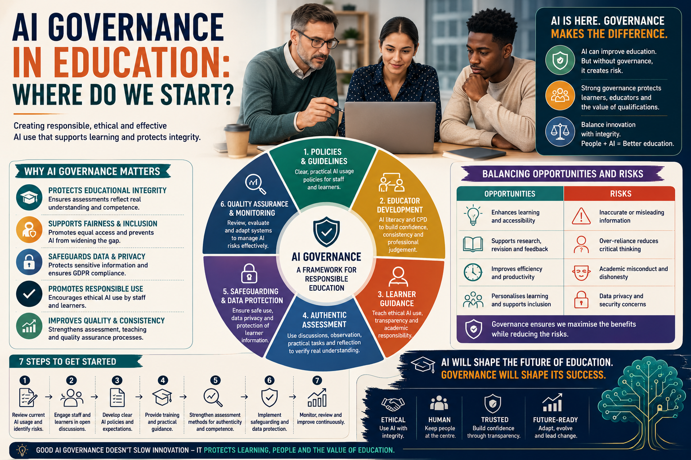

AI can improve education, but without governance it can create confusion, risk, unfairness, and weak assessment decisions. Strong governance protects learners, educators, data, and the value of qualifications.

Artificial intelligence is rapidly becoming part of everyday education. Across schools, colleges, universities, and vocational training environments, AI-powered systems such as ChatGPT, Microsoft Copilot, and Gemini are increasingly being used by learners, educators, assessors, and organisations to support learning, research, lesson planning, accessibility, administration, and assessment preparation.
However, while AI adoption is growing quickly, many educational providers are still facing one major question: how should AI actually be governed within education?
In many organisations, AI usage has developed faster than policies, staff training, learner guidance, or quality assurance processes. Some educators encourage AI use openly, others discourage it completely, and some learners use AI without understanding where support ends and misconduct begins. This inconsistency creates confusion, uncertainty, and risk.
AI governance refers to the systems, policies, procedures, and professional expectations used to ensure that AI technologies are used responsibly, ethically, fairly, and safely within educational settings.
It is not about banning technology completely. It is also not about allowing unrestricted AI use without boundaries. Effective AI governance creates a balanced approach that supports innovation while protecting:
One of the biggest mistakes providers make is assuming AI governance only relates to academic misconduct. In reality, AI governance affects teaching practice, learner support, accessibility, curriculum design, assessment, quality assurance, safeguarding, staff development, and organisational leadership.
A strong starting point is to develop clear AI usage policies for staff and learners. These policies should be realistic, understandable, and directly linked to the organisation's teaching, assessment, IQA, safeguarding, and data protection processes.
Without clear guidance, basic questions become difficult to answer:
Attempting to ban AI completely is unlikely to succeed long term because learners can access AI through phones, laptops, browsers, apps, and home devices. A stronger approach is to define responsible use, transparent use, and unacceptable use.
Providers may allow learners to use AI for revision, grammar improvement, practice questions, accessibility support, and simplified explanations, while still requiring learners to prove genuine understanding through professional discussion, practical assessment, reflective learning, and applied competence.
AI governance cannot work if staff are unsure how AI operates or how it should be managed. Many educators, assessors, and IQAs are still developing confidence in this area. Without training, organisations risk inconsistent practice across departments, assessors, tutors, and qualification areas.
For example, one tutor may encourage AI use responsibly, another may treat every use of AI as misconduct, while another may rely too heavily on unreliable AI detection tools. This inconsistency damages learner trust and weakens quality assurance.
Educational providers need ongoing CPD covering:
AI governance must work alongside authentic assessment practice. The issue is not only whether learners use AI. The real question is whether the assessment system successfully verifies genuine learner understanding.
Consider a learner studying business administration who uses AI to help structure a reflective assignment. The written work appears professional, but during discussion the learner struggles to explain key ideas independently. In this situation, the problem is not simply AI use. The problem is that written evidence alone did not prove competence.
Providers increasingly need assessment methods that focus on:
Professional discussion, practical demonstration, workplace observation, reflective learning, and scenario-based questioning are therefore central to good AI governance. They help educators verify authentic understanding more effectively than written evidence alone.
Many AI systems process prompts, uploaded files, user information, and interaction data. Staff and learners may unknowingly upload personal, workplace, assessment, or sensitive information into external platforms. Providers need clear guidance on safe AI use, GDPR responsibilities, confidentiality, and learner information protection.
Not all learners have equal access to technology, stable internet, paid AI tools, or digital confidence. AI adoption must not increase inequality. At the same time, AI can support inclusion through translation, speech-to-text, text simplification, revision support, and personalised guidance when used responsibly.
Good governance balances opportunity with responsibility. It allows education providers to benefit from AI while controlling risks that could damage fairness, safeguarding, assessment validity, or learner trust.
AI governance should be practical, visible, and manageable. A provider does not need a perfect AI system before taking action. It needs clear starting points, consistent expectations, and a review process that improves over time.
A training provider introduces an AI policy for learners and staff. Learners are allowed to use AI for revision, grammar support, and practice questions, but they must not submit AI-generated work as their own. Assessors add short professional discussion questions to selected assignments. IQAs update sampling plans to include AI-related authenticity risks. The provider reviews the policy after one delivery cycle using learner feedback, assessor records, IQA findings, and any malpractice concerns.